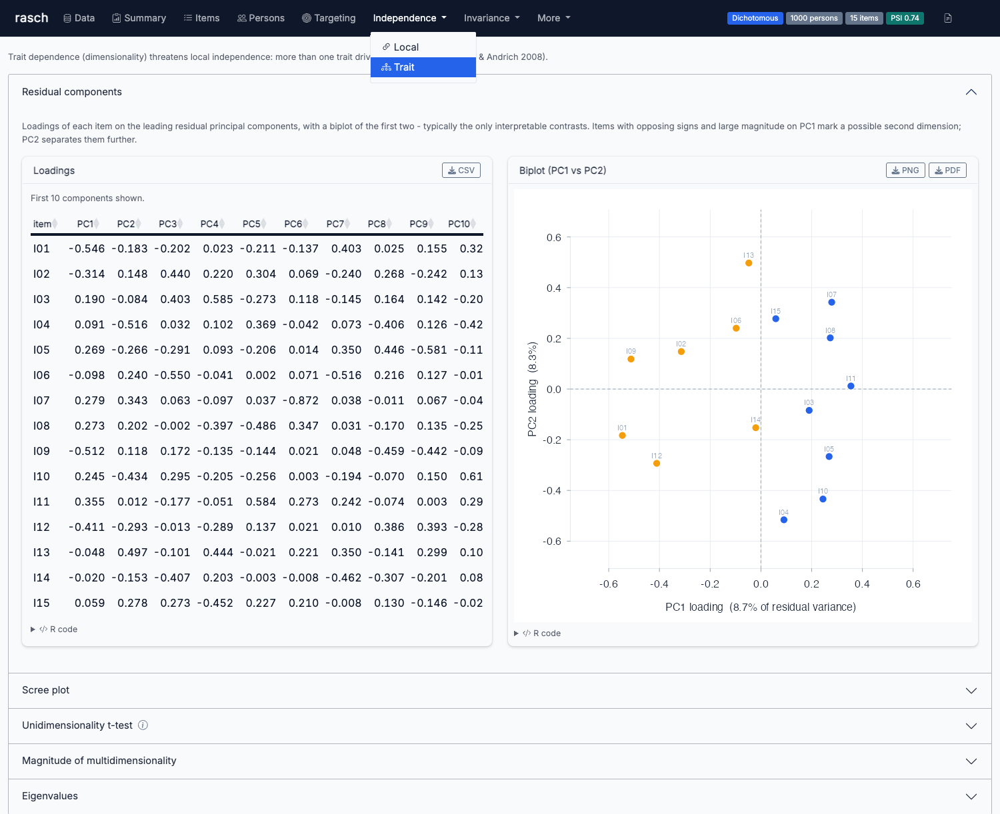
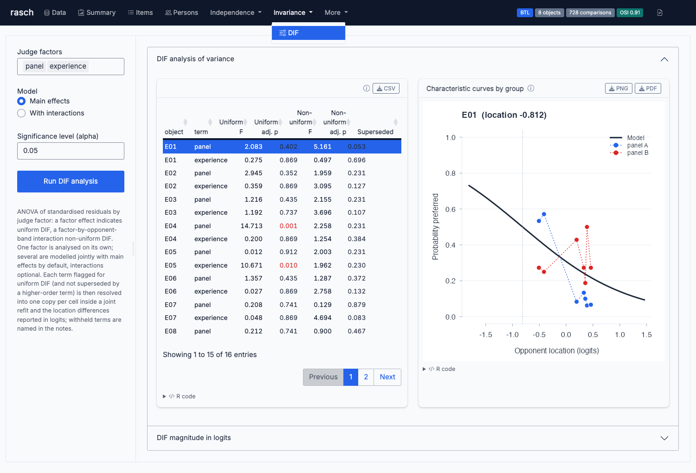

rasch is a Rasch Measurement Theory engine for R, built entirely from published measurement theory. Items are estimated by pairwise conditional maximum likelihood (Andrich & Luo 2003; Zwinderman 1995) with Godambe sandwich standard errors, persons by Warm’s (1989) weighted likelihood, and the complete diagnostic apparatus follows the conventions of Andrich & Marais (2019). A modern Shiny interface exposes every analysis with the reproducing R code attached to every output.
Documentation: https://drjoshmcgrane.github.io/rasch/

Highlights
- Models. Dichotomous, partial credit, and rating scale Rasch models; the many-facet model (Linacre 1989); the extended frame of reference model (Humphry 2005) — to our knowledge its first software implementation; and the Bradley–Terry–Luce model for paired comparisons as the conditional form of the dichotomous Rasch model, with graded preferences, judge diagnostics, judge-group DIF, and within-judge dependence (order and carry-over) effects.
- Estimation. Person-free pairwise conditioning throughout; sum-zero identification; sandwich standard errors (judge-clustered where judges exist); anchored estimation for equating; a principal-components threshold parameterisation for sparse categories.
- Test of fit. The log-of-mean-square fit residual with apportioned degrees of freedom, infit and outfit, the item-trait chi-square over automatically sized class intervals with its per-interval detail table, the class-interval ANOVA item F, threshold ordering diagnostics, and a calibrated composite likelihood-ratio test of PCM against RSM.
- Independence. Residual principal components with a model-simulated parallel-analysis reference, Smith’s person t-test with magnitude estimation (Andrich 2016), Yen’s Q3 and adjusted Q3* residual correlations, response-dependence magnitude in logits (Andrich & Kreiner 2010), subtests, and spread tests.
- Invariance. DIF by residual analysis of variance over any number of person factors — jointly, with main effects or full interactions, and proper within-subject (repeated-measures) error strata — DIF magnitudes in logits by the resolved-item method, planned contrasts, automatic iterative resolution of artificial DIF (Andrich & Hagquist 2012), and common-item equating tests.
- Everything exports. Every table to CSV, every plot to PNG and PDF, a one-file HTML report of the whole analysis, and the exact R call reproducing each output shown alongside it.
Installation
# install.packages("remotes")
remotes::install_github("drjoshmcgrane/rasch")The analysis engine is base R only (stats, graphics, grDevices, utils). The Shiny interface additionally uses shiny, bslib, and DT.
Quick start
library(rasch)
# a persons-by-items data frame; item names, an ID column, and person
# factors carry through the whole analysis
fit <- rasch(responses, model = "PCM",
id = "person_id", factors = c("gender", "site"))
summary(fit) # the full test-of-fit report
fit$items # locations, SEs, fit residuals, infit/outfit, chi-square
fit$person # WLE person measures with SEs and person fit
score_table(fit) # raw score to measure conversion
plot_icc(fit, "Q05", group = "gender") # the graphical DIF display
plot_pimap(fit) # person-item threshold distribution
dif_anova(fit) # DIF over all factors jointly (main effects;
# effects = "factorial" adds interactions)
dimensionality_test(fit) # Smith's residual-component t-test
residual_correlations(fit) # Yen's Q3 / Q3* local dependence
save_outputs(fit, "results/") # every table and plot, in one callMissing data is allowed everywhere: estimation is pairwise and person measures use each person’s observed items. Empty categories are collapsed and constant items dropped, with notes recorded on the fit.
The Shiny interface
rasch::run_app()A guided bslib (Bootstrap 5) workflow: one-tap example datasets, grouped run settings, status badges once a fit exists, and dark mode. Every plot and table lives in a full-screen-capable card with downloads; master–detail explorers drive the item, person, and DIF pages; dynamic notes summarise each table’s verdict in words; and an “R code for this analysis” panel shows the exact rasch call reproducing the current run. Wide, long (rated), frame-of-reference, and paired-comparison data layouts are all supported, including anchor upload for equating and one-click structural remedies (subtests, item splitting, automatic DIF resolution) with in-place reset.

Capability tour — the full API by example
# ------------------------------------------------------------- test of fit --
chisq_detail(fit, "Q05") # per-class-interval chi-square detail
ctt_table(fit) # classical companions: facility, item-total r,
# discrimination index, alpha, classical SEM
lr_test(fit) # PCM vs RSM: raw + Kent-calibrated composite LR
compare_fits(PCM = fit, RSM = rasch(responses, model = "RSM"))
guttman_table(fit) # scalogram with coefficient of reproducibility
# ---------------------------------------------------------------- persons --
score_table(fit, method = "mle", extremes = "extrapolated")
person_extrapolated(fit) # geometric extreme-score extrapolation
# (Andrich & Marais 2019, ch. 10)
# ----------------------------------------------------------- independence --
dimensionality_test(fit, component = 2) # any residual component's split
dimensionality_magnitude(fit, list(setA, setB))
# Andrich (2016): c, rho = 1/(1+c^2), and A
plot_pca_biplot(fit) # PC1 x PC2 loadings biplot
plot_scree(fit) # eigenvalues with a model-simulated reference
plot_resid_cor(fit) # Q3* heatmap (stat = "q3" for raw Q3)
dependence_magnitude(fit, dependent = "Q05", independent = "Q04")
# Andrich & Kreiner d in logits, with SE
fit2 <- combine_items(fit, list(c("Q04", "Q05"))) # subtest remedy
spread_test(fit2) # spread against the binomial least upper bound
# ------------------------------------------------------------- invariance --
dif_anova(fit, sizes = TRUE) # all factors jointly; within-subject factors
# get proper repeated-measures error strata
dif_contrasts(fit) # planned one-df questions with familywise control
dif_size(fit, "Q05", by = "gender") # DIF magnitude in logits
fit3 <- split_items(fit, "Q05", by = "gender") # resolve one item
resolve_dif(fit) # split iteratively, largest effect first,
# until no significant DIF remains
tailored_analysis(fit, chance = 0.25) # four-step guessing procedure
# ---------------------------------------------------------------- equating --
fit_eq <- rasch(responses, anchors = data.frame(item = c("Q01", "Q10"),
k = c(1, NA), tau = c(-1.2, 0.9)))
eq <- equate_tests(fit, fit_eq) # drift tests through the common items
plot_equate(fit, fit_eq)
# -------------------------------------------------------------- many-facet --
mf <- rasch_mfrm(ratings, person = "person", item = "criterion",
score = "score", facets = "rater")
mf$facet_effects$rater # severities with SEs and pooled fit
plot_facets(mf)
mfi <- rasch_mfrm(ratings, person = "person", item = "criterion",
score = "score", facets = "rater", interaction = "rater")
mfi$interaction_effects # item-by-rater interactions
# --------------------------------------------------------- multiple choice --
mc <- rasch(responses_raw, key = c(Q1 = "A", Q2 = "C", Q3 = "B"))
distractor_analysis(mc) # per option: n, proportion, location, pt-biserial
prop <- distractor_rescore(mc) # propose polytomous option scores
mc2 <- rasch(responses_raw, key = prop$option_scores)
# ------------------------------------------------- extended frame of reference --
ef <- rasch_efrm(responses, item_sets = list(numeracy = num_items,
literacy = lit_items),
groups = "year_group")
ef$phi_table; ef$alpha_table # group and item-set units with SEs
plot_frames(ef); plot_icc_frames(ef, "Q07")
# ------------------------------------------------------- paired comparisons --
bt <- btl(comparisons, object_a = "left", object_b = "right",
winner = "preferred", judge = "judge", order = "sequence")
bt$objects; bt$judges # locations + fit; erratic judges flag
bt$dependence # within-judge exposure and carry-over, in logits
plot_btl_dependence(bt, "carry_over") # interrogate a dependence effect
btl_transitivity(bt) # preference loops: is one scale enough?
btl_dimensionality(bt) # residual "swirl" (bimensions) = a 2nd attribute?
plot_btl_scree(btl_dimensionality(bt)) # bimension scree vs a noise reference
btl(comparisons, ..., position = TRUE) # first-position (order) advantage
btl(comparisons, ..., anchors = c(S07 = 0.42)) # anchored, for equating
btl_equate(bt, bt_lastyear) # common-object drift tests across panels/years
btl_information(bt) # design information per object (targeting)
btl_next_pairs(bt) # adaptive next comparisons (Pollitt 2012)
btl_dif(bt, list(panel = panel_map, experience = exp_map))
# judge-group DIF, factors modelled jointly
plot_btl_icc(bt, "E04", group = panel_map) # curves by judge group
# ------------------------------------------------------- repeated measures --
stack_data(t1, t2) # change-in-persons: DIF over time
rack_data(t1, t2) # change-in-itemsWhat it implements, in detail
- Pairwise conditional maximum likelihood (Andrich & Luo 2003; Zwinderman 1995): the person parameter cancels within every item pair and the conditional likelihood is maximised by Newton–Raphson (
pcml). Standard errors come from a Godambe sandwich estimator, which corrects the over-optimism of the naive pairwise information. - Partial credit (PCM) and rating scale (RSM) models; dichotomous data is the special case. An optional estimator (
pcml_pc) reparameterises each item’s thresholds as Andrich’s (1978, 1985) orthogonal-polynomial principal components — location, spread, skewness, kurtosis (Pedler- — to stabilise sparsely observed categories.
- Warm (1989) weighted likelihood person estimates, finite at extreme scores, computed per missing-data pattern; the geometric extrapolation of extreme-score measures (Andrich & Marais 2019, ch. 10), verified against the worked example.
- The fit residual exactly as derived in Andrich & Marais (2019, ch. 23): squared standardised residuals over the observed cells of non-extreme persons, equally apportioned model-testing degrees of freedom, and the log-of-mean-square transform with model-based variance. Infit and outfit are reported alongside, with distribution summaries and fit-location correlations.
- The item-trait chi-square over automatically sized class intervals with per-item degrees of freedom, Benjamini–Hochberg and Bonferroni adjustments, the per-interval detail printout, and the class-interval ANOVA item F.
- PSI with and without extremes, item separation, person strata, Cronbach’s alpha, targeting, power of the test of fit, the test information function, and classical-test-theory companions.
- A likelihood-ratio test of PCM against RSM reporting both the raw pairwise-composite chi-square and a Kent (1982) calibrated version whose eigenvalue adjustment comes from the same Godambe matrices as the sandwich standard errors: simulation shows the raw test is severely anticonservative while the calibrated one holds size.
- Residual-PCA dimensionality (Smith 2002) with a model-simulated parallel-analysis reference for the scree (simulate from the calibrated model, re-estimate persons, recompute eigenvalues — an independent-noise reference sits below the null and would call structure on model-true data), plus Andrich’s (2016) magnitude of multidimensionality.
- Local dependence by Yen’s Q3 and the adjusted Q3* (Christensen, Makransky & Horton 2017), response-dependence magnitude by the Andrich & Kreiner
- resolution method, subtests, and Andrich’s (1985) spread bounds.
- A complete DIF procedure extending the residual ANOVA of Hagquist & Andrich (2017): all person factors modelled jointly (main effects or full interactions, with interaction precedence), proper within-subject error strata for stacked repeated-measures designs, Tukey post-hocs, planned contrasts, DIF magnitude in logits by the resolved-item method, and automatic iterative resolution of artificial DIF (Andrich & Hagquist 2012).
- Anchored estimation and common-item equating tests with drift flags.
- The many-facet Rasch model (Linacre 1989) by the same pairwise conditional likelihood, with additive severities or item-by-facet interactions.
- Multiple choice: keys (including double keying), distractor analysis on rest measures, and polytomous option rescoring (Andrich & Styles 2011).
- The extended frame of reference model (
rasch_efrm; Humphry 2005; Humphry & Andrich 2008): frames are item-set by person-group cells with units rho = alpha_set × phi_group; person-group units come from person-free within-frame pairwise conditioning, item-set units from persons common to the sets, reconciled over the linking graph. - The Bradley–Terry–Luce model (
btl) as a member of the same family —btl()on the pair-conditional comparisons extracted from Rasch data reproducespcml()’s item locations to solver tolerance. Dichotomous or graded preferences (symmetric thresholds, so the model is invariant to presentation order), judge-clustered sandwich standard errors, object and judge fit, pairwise goodness of fit, within-judge dependence effects (exposure and carry-over, estimated jointly with the locations, with a per-comparison audit trail and a partial-residual display), and judge-group DIF with factors modelled jointly and resolved magnitudes in logits.
Measurement-theoretic status
Everything in the package that claims to be Rasch measurement is conditionally estimated, sufficiency-respecting, and invariance-preserving: item comparisons are person-free by pairwise conditioning, and the partial credit, rating scale, and additive many-facet models are members of the Rasch class. The diagnostics (fit residuals, item-trait chi-square, residual components, DIF analysis of variance, threshold ordering) exist to police the theory’s requirements, and the structural remedies (subtests, item splitting, anchoring) are orthodox practice that restore rather than parameterise away invariance.
Departures from the classical model are deliberate and labelled. Warm’s weighted likelihood adds a penalty beyond the conditional likelihood (this is what makes extreme-score estimates finite). Cronbach’s alpha and the distractor point-biserials are classical-test-theory companions, reported as descriptives only. Interactive facet mode remains in the Rasch class but a significant item-by-facet interaction qualifies specific objectivity in practice. The extended frame of reference model is strictly Rasch within every frame; across frames it is an argued extension of the theory of the unit (Humphry 2005; Humphry & Andrich 2008) whose status the literature still debates, and its item-set units are necessarily identified from the person side — a departure from purely distribution-free comparison that belongs to the model, not the implementation.
Case study: wording effects as frame units
inst/casestudies/wording_units_selfesteem.R applies the extended frame of reference model to the public Rosenberg Self-Esteem Scale dataset of the Open Source Psychometrics Project, treating positively and negatively worded items as two item sets. The positively worded items carry a unit about 27 per cent larger than the reverse-scored negative items (alpha ratio 1.266, 95% CI 1.246–1.286), and it matters: persons with identical raw scores differ by up to 0.85 logits once the wording units are modelled, and the male–female gap is understated by about 10 per cent under equal units. A free-slope model agrees at the set level, and sensitivity analysis localises part of the effect to the scale’s well-known ambivalent item.
Case study: party blocs and crisis concern as frames
inst/casestudies/party_blocs_crisis.R applies the paired-comparison form to the Tübingen 2009 party-preference data shipped with psychotools (Strobl, Wickelmaier & Zeileis 2011): ideological blocs as object sets, concern about the 2008–9 economic crisis as judge panels. Crisis-affected respondents judge party contests with a unit about a third smaller than the unaffected — less decisively, not more — though the contrast stays short of significance by either standard error, and it exceeds anything gender or education produces; the right bloc’s origin sits firmly below the left’s in this university-town sample. The study doubles as a design clinic: a two-object set whose single internal pair splits nearly evenly identifies neither its panel-ratio contribution nor its own unit, and the fit now screens the set out of the unit reconciliation, reports the boundary-unstable set unit as NA, and names both in notes rather than diverging — the honest answers to questions such a design cannot support.
Validation
Every estimation and diagnostic component is validated against simulated data with known parameters in tests/testthat (990+ tests): parameter recovery for every model; sandwich standard errors against empirical sampling variability; DIF detected on planted items only — including within-subject, factorial, and judge-group designs — with adversarial cases for artificial DIF; dimensionality verdicts on one- and two-dimensional data with a calibrated null; dependence effects recovered from sequentially simulated judgments; and the published conventions reproduced directly against the worked examples they come from. R CMD check runs clean.
The estimators are also cross-validated against independent implementations, at the level of agreement each comparison licenses: sirt::rasch.pairwise estimates the same pairwise conditional family and agrees to near-identity; eRm fits the full Andersen conditional likelihood — a different consistent estimator of the same parameters — and agrees to sampling precision, with our judge-robust sandwich standard errors sitting just above eRm’s CML errors (the documented efficiency price of pairwise conditioning); and btl() reproduces psychotools::btmodel to machine precision, as it must (same likelihood). These checks run in the test suite whenever the packages are installed.
Methodological references
Andrich & Luo (2003) and Zwinderman (1995), conditional pairwise estimation; Andrich (1978, 1985) and Pedler (1987), principal-components thresholds; Warm (1989), weighted likelihood; Smith (2002), residual-component dimensionality; Raiche (2005) and Chou & Wang (2010), eigenvalue references; Andrich (2016), multidimensionality magnitude; Yen (1984, 1993) and Christensen, Makransky & Horton (2017), residual correlations; Andrich & Kreiner (2010) and Andrich, Humphry & Marais (2012), response dependence; Waller (1989) and Andrich, Marais & Humphry (2012), tailored analysis of guessing; Hagquist & Andrich (2017), DIF by residual ANOVA; Andrich & Hagquist (2012, 2015), artificial DIF; Maxwell & Delaney (2004), planned contrasts; Linacre (1989), many-facet measurement; Humphry (2005) and Humphry & Andrich (2008), the unit and the extended frame of reference; Bradley & Terry (1952), Luce (1959), and Davidson & Beaver (1977), paired comparisons and order effects; Dittrich, Hatzinger & Katzenbeisser (1998), judge covariates; Kent (1982) and Varin, Reid & Firth (2011), composite likelihood-ratio calibration; Andrich & Marais (2019), the output conventions followed throughout.